CASE 01
ストレートネック・肩こり
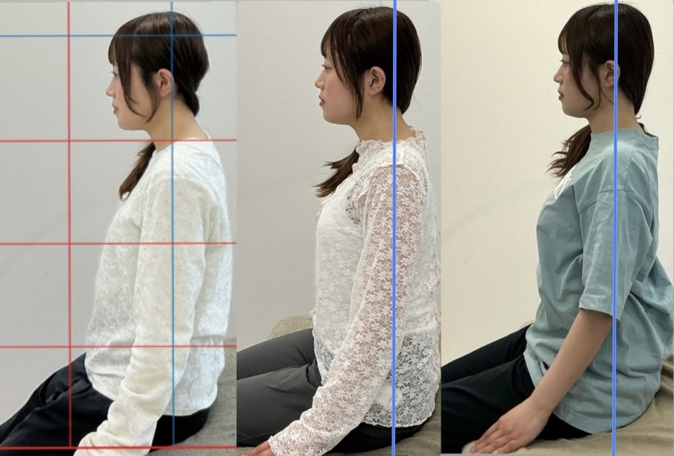
整体Lien
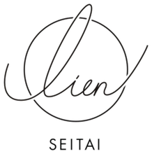
姿勢から、美しさを。
理学療法士だからできる。
姿勢から見た目を変える美容整体。
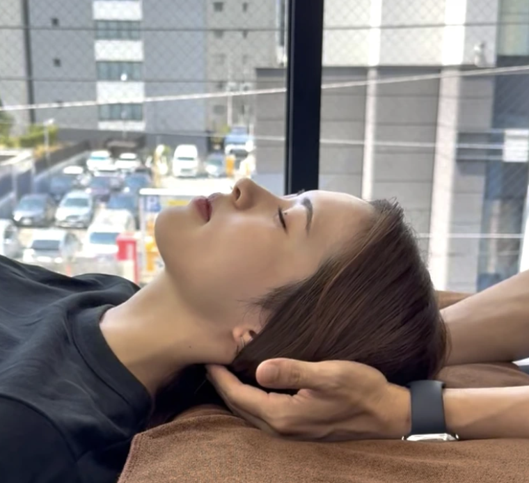
国家資格理学療法士が担当
HOT PEPPER Beauty★★★★★4.9口コミ85件
7月限定初回 2,000円残り8名
BEFORE / AFTER
CASE 01

CASE 02
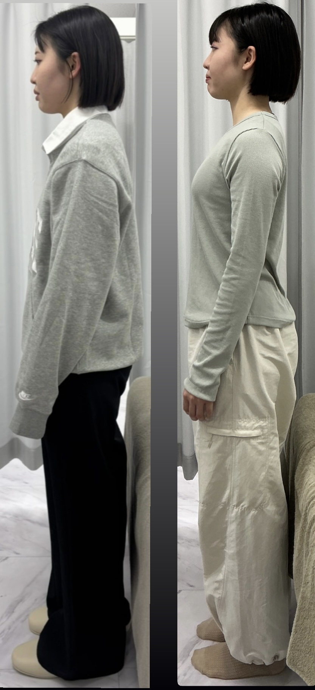
CASE 03
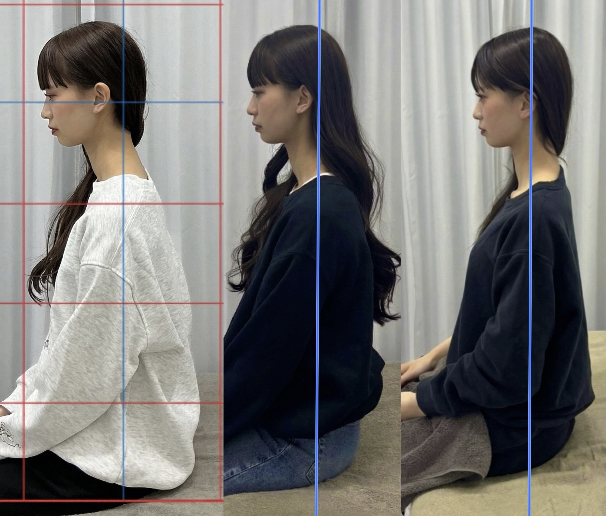
CASE 04
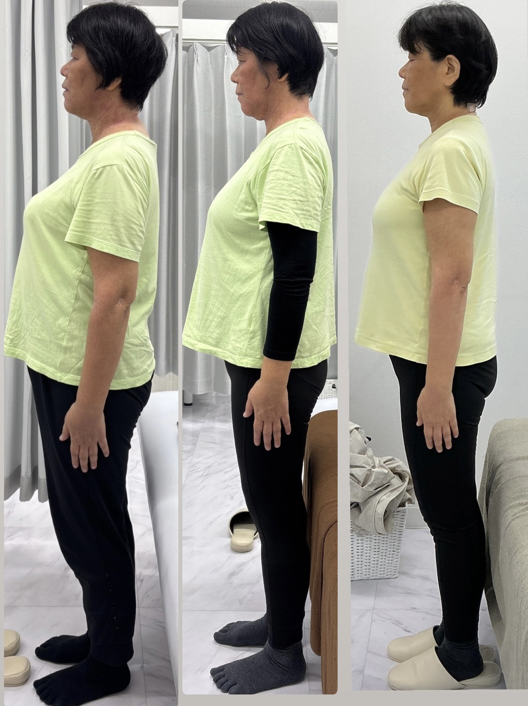
※変化には個人差があります
WORRIES
「脂肪だから仕方ない。」
そう思っているそのお悩み、
実は姿勢が関係しているかもしれません。
二の腕が細く見えない…
姿勢が変わることで、
肩の位置や腕の見え方が変わる方もいます。
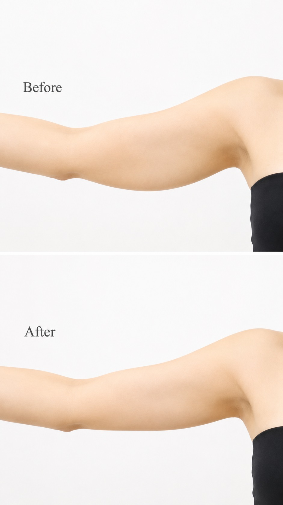
フェイスラインがぼやけて見える…
首や頭の位置が変わることで、
輪郭の印象が変わる方もいます。
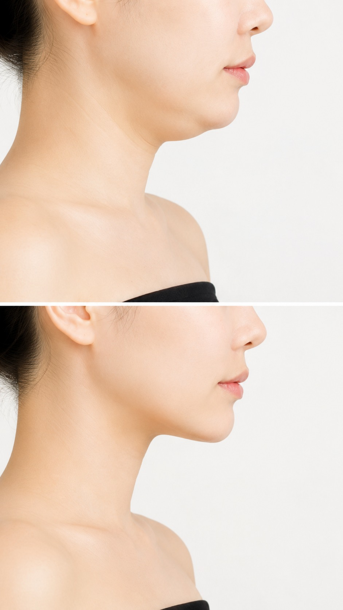
肩幅が広く見える…
巻き肩が改善すると、
肩のラインがすっきり見えることがあります。
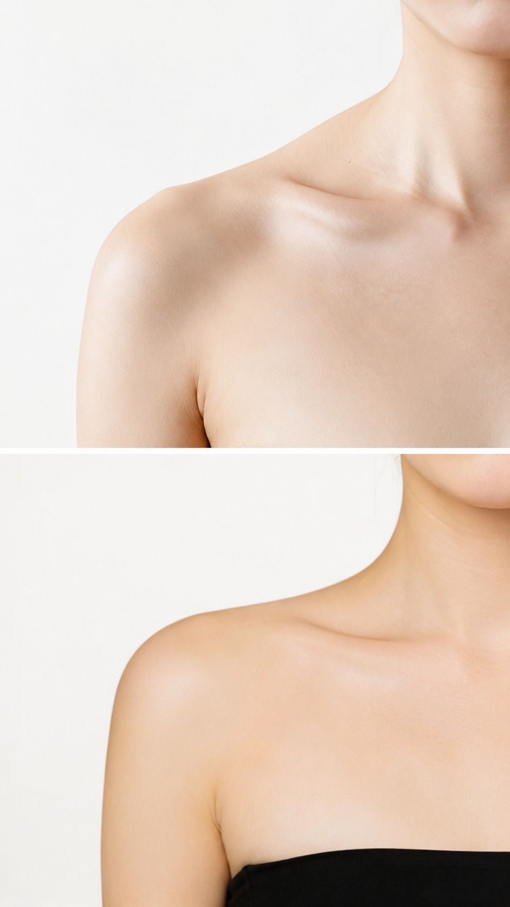
ぽっこりお腹が気になる…
骨盤や姿勢が整うことで、
お腹周りの見え方が変わる方もいます。
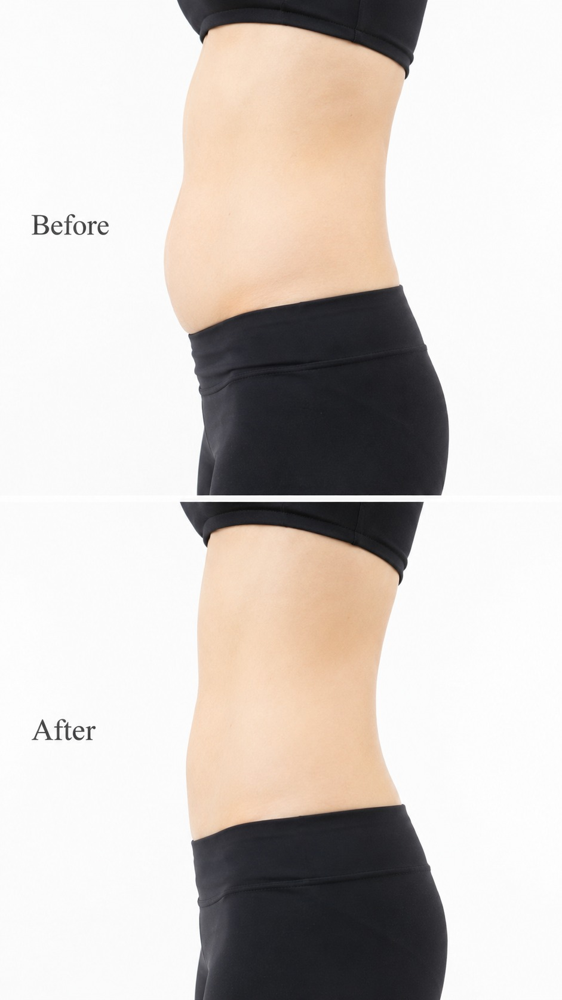
脚が太く見える…
重心や姿勢が整うことで、
脚のラインの印象が変わることがあります。
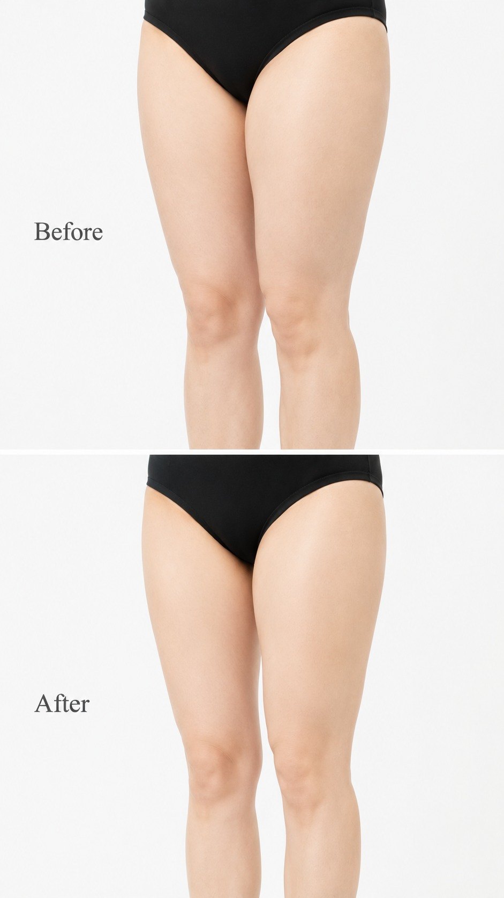
FEATURE
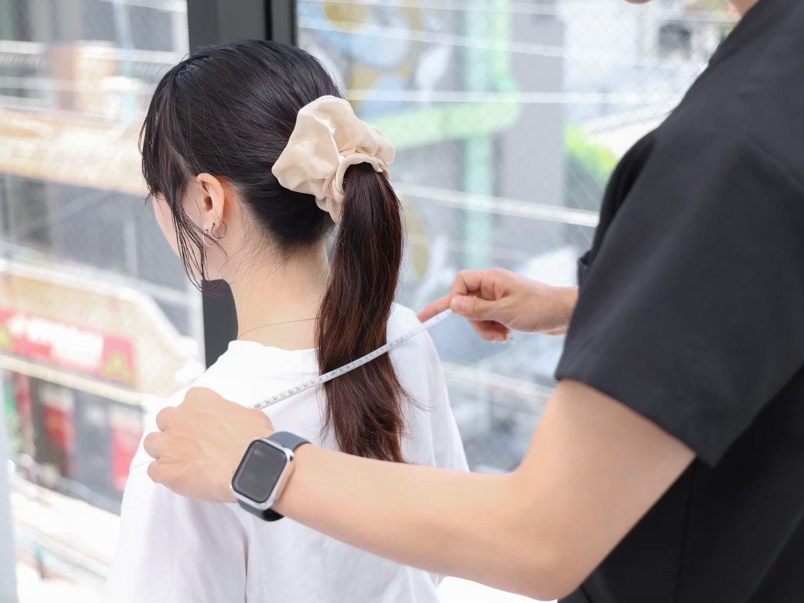
見た目だけでなく原因まで分析し、あなたに合った改善方法をご提案します。
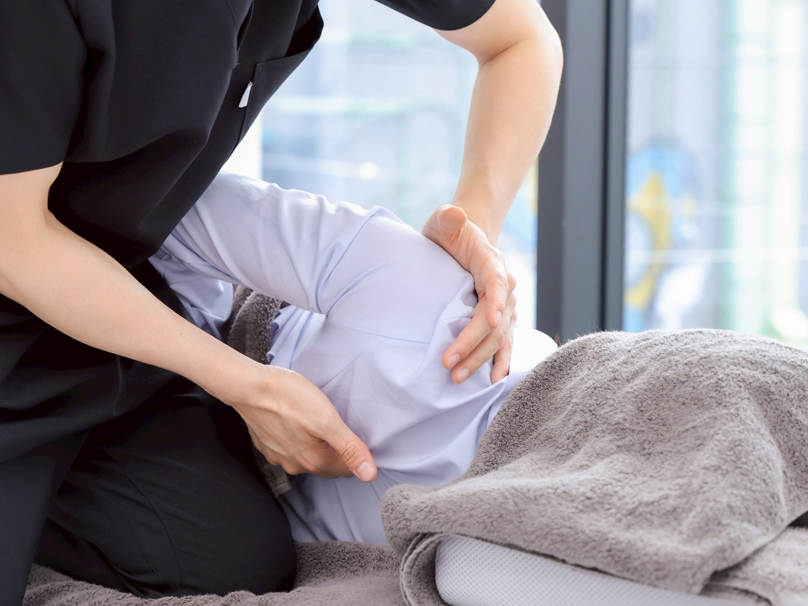
施術前後で姿勢や身体の変化を確認し、実感できる施術を行います。
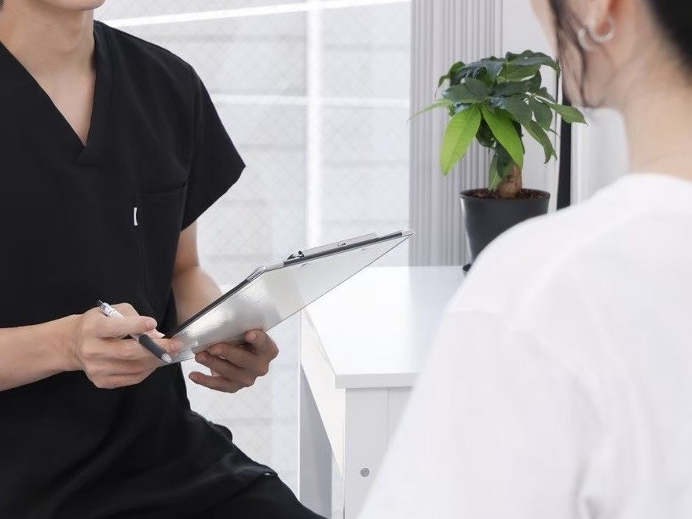
施術だけで終わらず、セルフケアや日常動作までサポートします。
RECOMMEND
美Beauty
姿勢が整うことで、第一印象まで美しくしたい方へ
健Health
その場しのぎではなく、戻りにくい身体を目指したい方へ
FLOW
お悩みや理想の姿勢、生活習慣まで丁寧にヒアリングします。
姿勢や身体のクセを分析し、原因を見える化します。
身体の状態に合わせて、必要な施術を行います。
施術前後を比較し、変化を一緒に確認します。
ご自宅でできるケアや、今後の改善プランをご提案します。
VOICE
実際にご来店いただいたお客様から
嬉しいお声をいただいています。
30代前半 女性
初回で決めるつもりはありませんでしたが、長年つらかった首肩まわりが一気にスッキリし、姿勢まで良くなって衝撃でした。
丁寧なヒアリングとホームケアまで教えていただけるので、安心して通えています。
20代前半 女性
肩こりや姿勢の悪さが気になって来店しました。
身体の状態を細かく分析してくださり、自分では気づかなかった原因まで分かりました。
施術後は身体が軽くなり姿勢の変化も実感できました。
30代後半 女性
説明も分かりやすく、施術後すぐに首や肩の動きが変わって驚きました。
セルフケアまで丁寧に教えていただけるので安心して通えています。
40代 女性
長年悩んでいた肩や首のつらさがとても楽になりました。
毎回身体の状態を丁寧に説明してくださるので安心して通えています。
セルフケアも教えていただけるので家でも続けられています。
50代 女性
整体は初めてで不安もありましたが、身体の状態をしっかり見てから施術してくださるので安心でした。
施術後は姿勢も伸びたように感じ、身体がとても軽くなりました。
初めての方も、無理な勧誘なくご相談いただけます。
30秒で空き状況を見るFAQ
初めての方にも安心して
ご来院いただけるよう、
よくいただくご質問をまとめました。